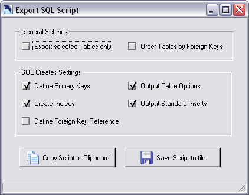
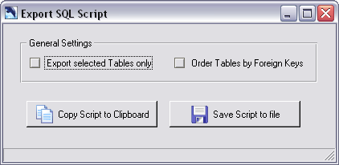
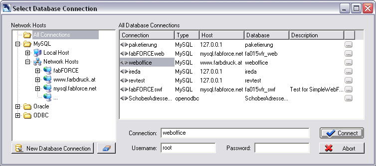
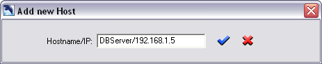
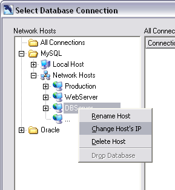
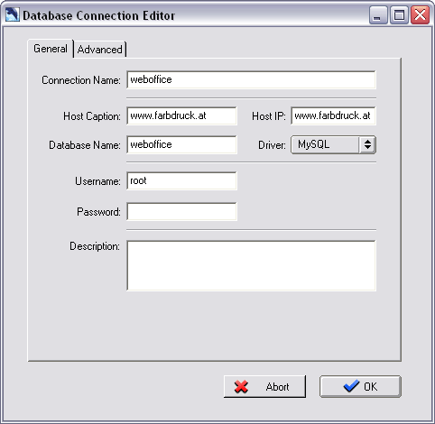
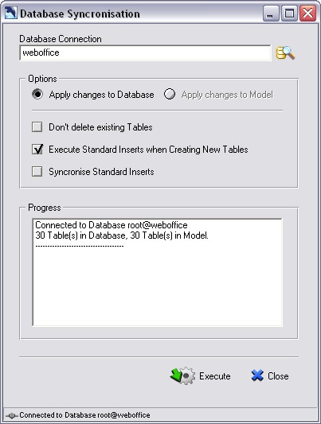
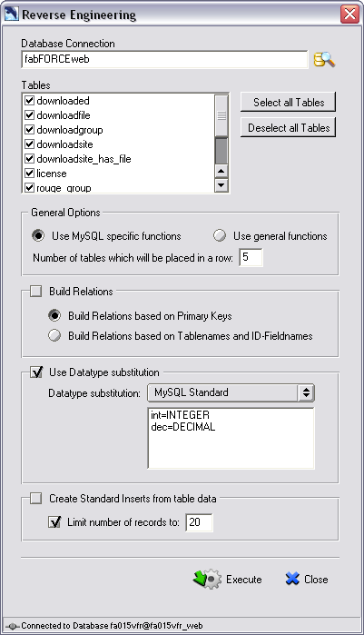

Like any other database modelling tool DBDesigner 4 can export the model as a SQL script file
which can be executed by any database maintenance tool, like the MySql command line tool.
All SQL CREATE TABLE statements and the Standard Inserts can be written to the SQL script file
depending on user settings.
It is also possible to output all SQL DROP TABLE statements.
With DBDesigner 4 you can simplify the task of creating and maintaining your database.
DBDesigner 4 offers the ability to connect to a MySQL server and to create and
synchronize a database with the designed model.
Synchronisation means that DBDesigner 4 scans all tables in the existing database and checkes
for differences. If a table is present in the model but not in the database, the according
SQL CREATE TABLE statement is executed.
If the table is not present in the model but in the database it can be deleted depending on
user settings.
If the table exists in the model and the database as well, all fields are compared and if there is
a difference, the appropriate SQL ALTER TABLE statements are executed.
To reverse engineer a database means to connect to a database server, take an existing database
and automatically build a database model based on the meta information in the database.
Within DBDesigner 4 all table information is extracted from the meta information and relation between
the tables are rendered based on table and field names. The tables are placed on the model in alphabetical order
following a grid scheme defined by the user.
The process of reverse engineering is possible with MySQL, Oracle and any database
which is accessable by ODBC.
The extraction of all table information is only possible using a MySQL database. All other databases are limited
to the bottleneck of ODBC.
To export a SQL create script based on you current database model select File-Export-SQL Create Script ... The Export SQL script dialog appears.

Export SQL Creates dialog
To export the SQL Creates to a file, press the [Save script to file] button. You will be promted
for the file's name and destination. Press [Save] to write the script to disk.
When a sql shell is open, it can be useful to copy the script to the clipboard and execute it directly
from the sql shell. To copy the SQL script to the clipboard press the [Copy Script to Clipboard] button.
The output can be customised using the following General Settings and the SQL Creates Settings.
Check this flag to export the selected tables only. All other tables will not be created by the script file.
Use this flag to change the creation order. By default the tables are created in alphabetical order.
When you are using foreign keys it is necessary to change the order the tables are created.
Tables with no relations pointing to them have to be created first. Every other table can only be
created when all source tables already exist.
If there is a collection of cyclic relations, the tables cannot be created. An error message is displayed.
Note that you still can export the tables in alphabetical order.
Check this flag if you want to enable the creation of primary keys.
Check this flag if you want to enable the creation of indices. This does not include the primary keys. Check the Define Primary Keys flag to create primary keys.
Use this option to enable the foreign key reference in the SQL CREATE TABLE statements. Note that you have to enable the Order Tables by Foreign Keys option to make the SQL script work.
Use this option to enable the table options in the SQL CREATE TABLE statements. This is only necessary if you have specified Table Options for a table in the model.
Use this option to export the Standard Inserts within the SQL create script. This is only necessary if you have specified Standard Inserts for a table in the model.
To export a SQL drop script based on you current database model select File-Export-SQL Drop Script ... The Export SQL script dialog appears.

Export SQL Drops dialog
To export the SQL Drops to a file, press the [Save script to file] button. You will be promted
for the file's name and destination. Press [Save] to write the script to disk.
When a sql shell is open, it can be useful to copy the script to the clipboard and execute it directly
from the sql shell. To copy the SQL script to the clipboard press the [Copy Script to Clipboard] button.
The output can be customised using the following General Settings and the SQL Creates Settings.
Check this flag to export the selected tables only. All other tables will not be dropped by the script file.
Use this flag to change the creation order. By default the tables are dropped in alphabetical order.
When you are using foreign keys it is necessary to change the order the tables are dropped.
The tables will be dropped the reversed order they have been created.
If there is a collection of cyclic relations, the tables cannot be created. An error message is displayed.
Note that you still can export the tables in alphabetical order.
Several functions in DBDesigner 4 use Database Connections. They are used to establish a connection to a database by selecting the appropriate server and database.
A new Database Connection is created in the Database Connection Dialog.
To create a new Database Connection, click the New Database Connection button. The Connection Parameter Dialog is shown. Specify all needed information an click OK to add the connection to the connection list.
Like creating a new Database Connection, the Database Connection Dialog is used to connect to a database.
Select the appropriate connection from the connection list. Enter a username and the password and press the Connect button to establish the connection.
To make changes to meta information in a database it is necessary to connect as an user with the required rights.
Within MySQL the database administrator is called root. He has got all rights and is allowed to create a new database
or make changes to any database. Every other user is allowed to access and modify only the tables he has got the
appropriate rights for.
To avoid problems while synchronizing or quering a database make sure the user which is used to build the connection
to the database has the required rights.

Database Connection Dialog
The Database Connection Dialog is seperated into three areas, the Network Hosts Tree, the Connection List and the User/Password Section.
The Network Hosts Tree displays all entered hosts and their databases. It is used to filter the displayed connections
and to create new connections to a host's databases.
When the first node named [All Connecions] is selected, all entered connections are displayed in the Connection List.
To display all connections to the local MySQL host select [MySQL]-[Local Host].
To display all connections to MySQL host located on the network select [MySQL]-[Network Hosts].
To display all connections to a specific MySQL network host select the hosts name beneath the [MySQL]-[Network Hosts] node.
Connections to Oracle or ODBC databases can be filtered like the MySQL connections.
To display the databases of a entered Host click on the [+] icon left to the Host's name. DBDesigner 4 prompts for the user's name and password which will be used to log in. Note that the specified user has to have the appropriated rights to execute a SQL SHOW DATABASES command.
After the installation of DBDesigner 4 it is possible only to connect to the local MySQL host. To add a new network
host obey the following.
To enter a new Host, click onto the [...] node listed beneath the [Network Hosts] node beneath of the wanted database type.
The Add new Host Dialog will apear.

Add new Host Dialog
Enter the node's name followed by a slash and it's IP address. In place of the IP address the host's network name can be
specified also, e.g. webserver or www.theserver.com.
Press return to create the append the new Host to the Network Hosts Tree.
To change a Hosts name or IP address right click on a Host. The Host's popup menu will be displayed.

Host popup menu
Select the desired function from the menu.
To delete a Host select [Delete Host] from the popup menu.
It is possible to create a new database from within the Database Connection Dialog. To create a new database display the Host's databases like descibed above. Click the last node below the Host's node which is labeled [...]. The New Database Dialog will apear. Enter the database name and press return. The database will be created.
It is possible to drop a database from within the Database Connection Dialog. To drop a database
show the Host's databases like descibed above. Click the database's node with the right mouse button to
display the popup menu. Select [Drop Database].
Be aware that once a database is dropped it cannot be restored. A database backup has to be restored instead.
The Connection List displays the connections selected in the Network Hosts Tree. Click on the wanted connection
to set the connection in the User Section.
To create a new connection select the Host to connect to in the Network Hosts Tree. Display the Host's databases.
Now drag the database to connect to onto the Connection List. A new connection is created.
Instead of dragging the database you can select the database with the left mouse button and press the
[New Connecion to selected Database] button.
The list has got six columns. The connecion name displays the name of the connection. Double click on the name to
change it.
The type displays the type of database the connection is refering to. Doubleclick the type to change it.
Click on the [...] button to display the connection parameters.
When a database connection is selected in the Connection List the connection's name is displayed in the
User Section and DBDesigner 4 prompts for the user's password. The password is never stored with the
database connection because of security issues.
Press enter or click the [Connect] button to establish the database connection. If the connection was
successfully build the connection dialog is closed. If an error occured, e.g. the password was wrong,
a the error message is displayed.
The Connection Parameter Dialog is used to change.

Connection Parameter Dialog
Each Database Connection is identified by a unique name.
Enter a caption for the database server. Only needed for MySQL connections.
Enter the database server's IP address or network name. Only needed for MySQL connections.
Enter the name of the database. When using the MySQL Driver this is the name which was used in the CREATE DATABASE SQL statement.
When the ODBC Driver is selected enter the ODBC Data Source Name (DNS).
When using the Oracle Driver enter the connection name.
Select a database driver from the dropdown list. When a new database driver is selected all values are set to their initial state.
Specify the username used to connect to the database.
Specify the password used to connect to the database.
Enter a description with a short information about the database connection.
Beware. Only modify the advanced connection parameters if you know what you are doing. The [Reset to Defaults] can be used to reset the connection parameters to their defaults. To add or delete a parameter use the according buttons.
The default parameters can be modified by editing the file DBDesigner4_DBDefaultSettings.ini located in the DBDesigner 4 data directory.
The host column displayes the entered IP or network name of the host. Double click on the host's IP/network name to change it.
The database column displays the database the connection is build to. It can be changed using a double click.
The description column displays additional information about the connection. It can be changed using a double click.
To synchronise the model with a database select [Database]->[Database Syncronsiation] from the main menu.
The synchronisation can also be called by pressing the [Sync] button in the Tools palette. Note that
an empty model cannot be synchronised.
The Database Connection Dialog will be shown. Select the connection to the database which should
be synchronised. Enter the user's password and press [Connect] to establish the connection.
The synchronise function can be run against an empty database. All tables will be created and the
Standard Inserts will be inserted into the tables.
To synchronise the model with a new database call the Database Synchronisation. The Database Connection Dialog is
displayed. To create a new database display the Host's databases and click the node labeled [...] like explained
above. Name the database an create a new connection by dragging the database's node onto the Connection List.
Connect to the new database.

Database Synchronisation
When the connection to the database is established successfully the Database Synchronisation Dialog
is displayed.
The name of the database connection is displayed at the top. To connect to a different database click the button right to the connection's name. The Database Connection Dialog is displayed again and a different connection can be selected.
This option is seleted by default. The database will be modified to reflect the changes made to the model. The model will be unchanged when the synchronising function is executed.
To modify the model instead of the database select this option. The database will be unchanged when the
synchronising function is executed.
This function will be enabled in upcoming versions of DBDesigner 4. At the moment use the Reverse Engineering
functions instead.
Check this option to keep tables in the database which are not present in the model. If this option is not checked these tables will be dropped.
If this option is activated the Standard Inserts will be inserted into the new created table. This option is selected by default.
Activate this option when changes to the Standard Inserts of a table have been made. The rows will be
compared using the primary key fields. If a row in the database matches with a row in the Standard Inserts
all the values entered in the Standard Inserts will be compared. Values not present in the Standard Inserts
will be ignored. Appropriate changes are made to the database table rows.
Database table rows with a primary key value which is not matched by and primary key value in the
Standard Inserts are kept unchanged. Because of that manually entered rows will stay in the table even
when this option is used. If a Standard Insert is deleted in the model the it has to be removed from the
according row in the database table has to be deleted manually.
The synchronisation cannot be undone. Before executing check all selected options. Check the
Progress List which will display the connection info and the number of tables in the database and the model.
The connection info will be printed like this [user@database], e.g. [root@webshop].
To execute the synchronisation press the [Execute] button at the bottom of the dialog.
The execution can be monitored through the Progress List. All checks and changes are listed.
To call the Reverse Engineering function select [Database]->[Reverse Engineering] from the main menu.
The function can also be called by clicking the [Rev.] button in the Tools Palette.
Normally the Reverse Engineering function is called with an empty model. It is also possible
to add the tables to an existing model. If the database tables should be created within a new model
select [File]->[New] from the main menu before calling the function.
The Database Connection Dialog will be show. Select or create a new connection to the database which should be
reverse engineered and establish the connection.

Reverse Engineering Dialog
When the connection to the database is established successfully the Reverse Engineering Dialog
is displayed.
The name of the database connection is displayed at the top. To connect to a different database click the button right to the connection's name. The Database Connection Dialog is displayed again and a different connection can be selected.
Select all database tables which should be created in the model. All tables are selected by default. To select all tables when some of them have been deselected press the [Select all Tables] button. To deselect all tables press the [Deselect all Tables] button.
When an MS Access Database is selected the MS Access' system tables are deselected automatically.
Check this option when a MySQL database is reverse engineered. MySQL specific functions like DESCRIBE TABLE will be used to generate the most accurate copy of the table's structure. Do not use this option with any other database.
Use this option when any other than a MySQL database is reverse engineered.
When the database is reverse engineered all the selected database tabels are placed in a grid on the models canvas. This option specifies the number of tables in a row.
Use these options to let DBDesigner 4 create the relations between the tables automatically. Please note that this may lead to incorrect results. So always check the relations after the database has been reverse engineered.
Check this option to build relations between the tables in the model automatically. The relation will be build upon the table primary key fields. When the PK fields of a table are present in another table a 1:n relation is created.
Check this option to build relations between the tables in the model automatically. The relation will be build upon the table's and primary key field's names. The following naming principle is assumed. The primary key of a table is named ID + Tablename. If the primary key name is present in a different table a one-to-many between the two tables is created.
Check this option if you want to change some datatypes' names. This option can be used to map different datatypes
between different databases.
By default the Datatype Substitution [MySQL Standard] is selected. This substitution will replace MySQL's
abbreviations [int] and [dec] with the [INTEGER] and [DECIMAL] datatypes.
To change a datatype's name enable this option, change the Datatype Substitution to [User defined] and
add a line to the Datatype Substitution List. Use the following format.
[OldDataypeName=NewDatatypeName], e.g. [int=INTEGER] will replace all [int] datatypes with [INTEGER] datatypes.
To execute the function press the [Execute] button at the bottom of the dialog.
This option can be used to automatically create Standard Inserts for the created tables. The Standard Inserts will be built from the table's data stored in the database.
The number of created Standard Inserts can be limited to a maximum number by using this option.
This can be useful if there are many rows stored in the table but only a few records are needed for
testing purposes.
Copyright 2003 fabFORCE.net. All rights reserved. |
|